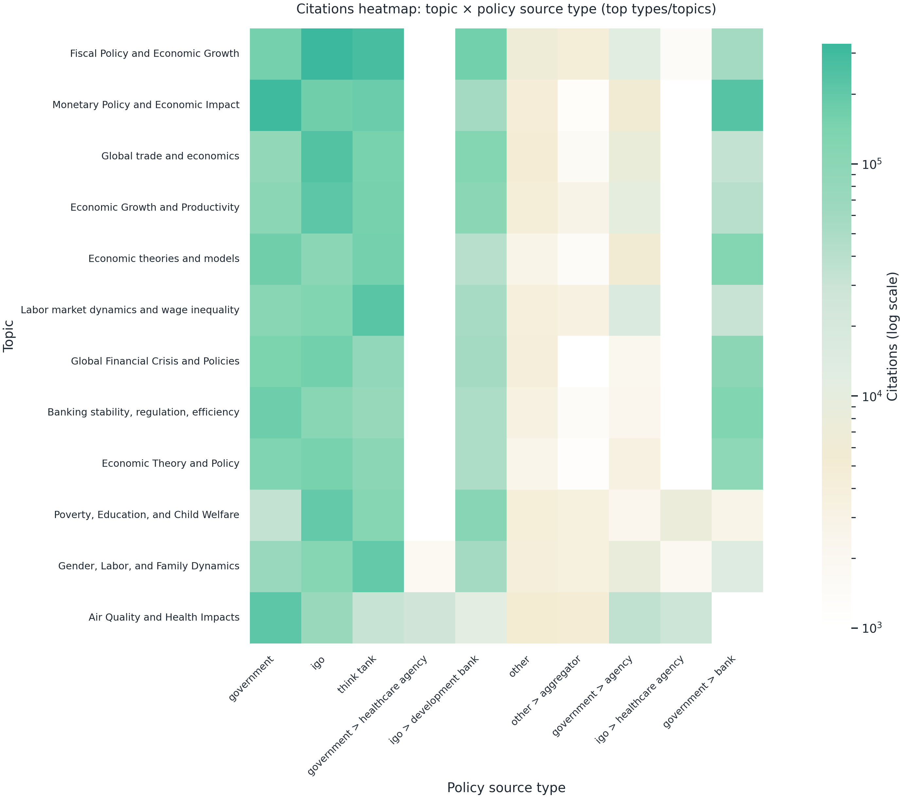
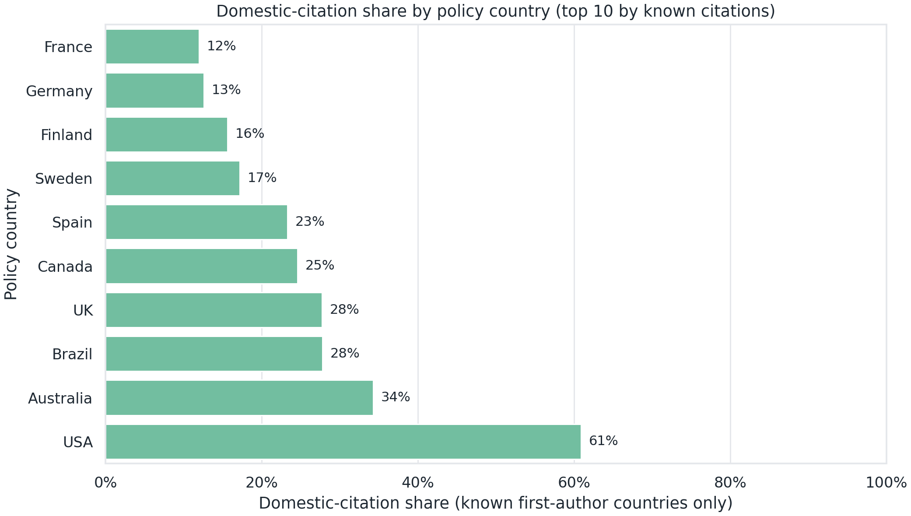
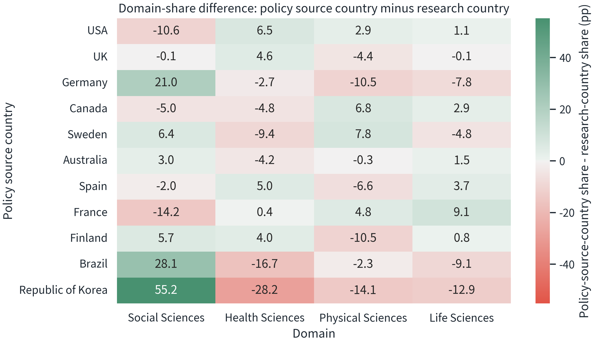
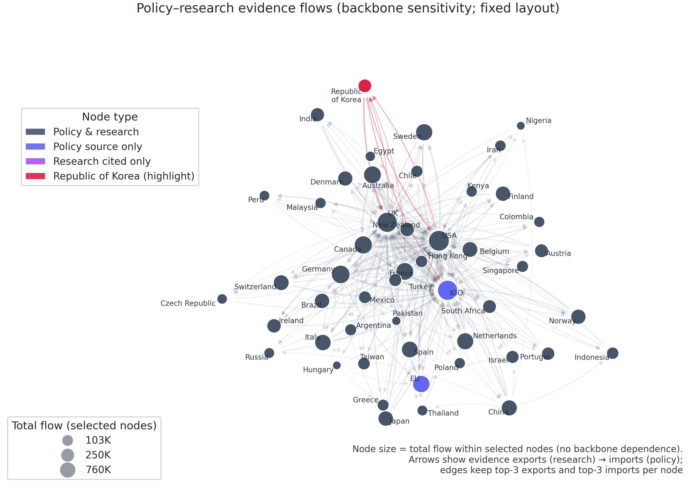
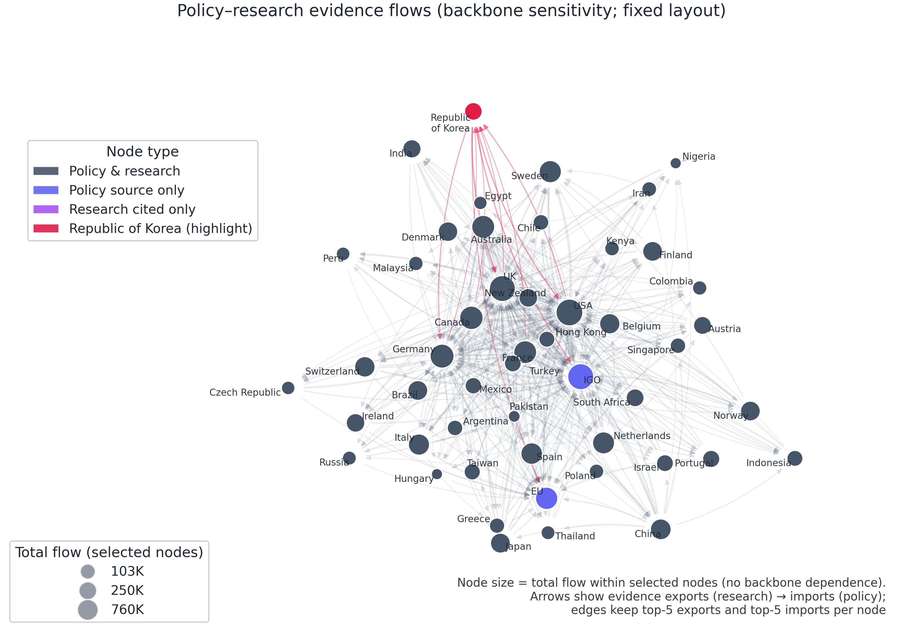
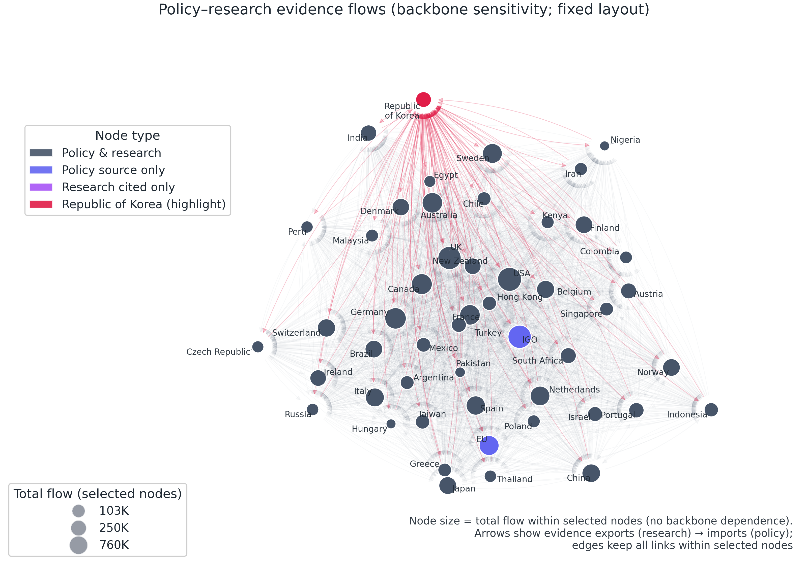
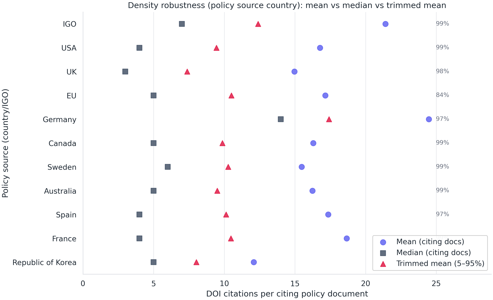
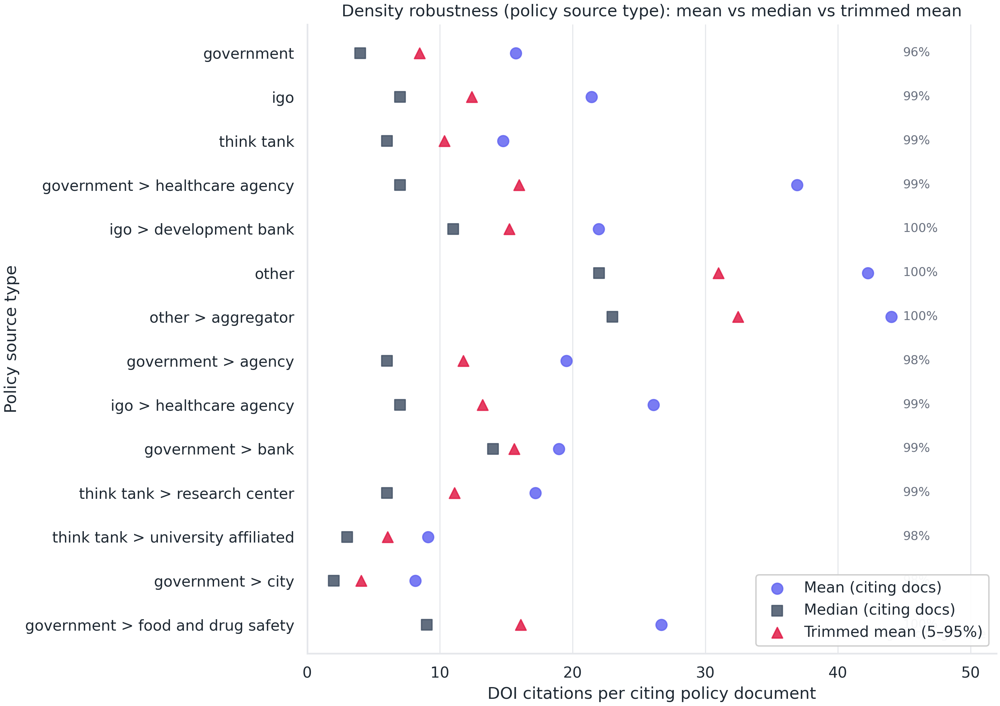
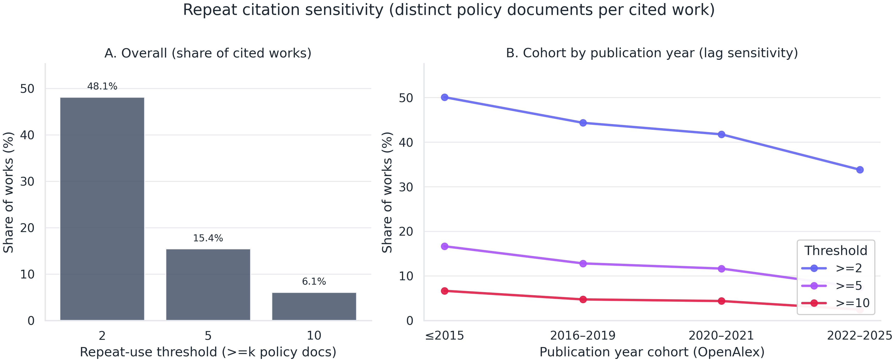

부록
← Extended Report 개요 · 인터랙티브 · 보고서(PDF)
본문에서 언급한 수치와 패턴을 더 안전하게 해석할 수 있도록 자료를 정리했다. 구성은 커버리지·태깅, 지표 정의·해석 주의, 추가 그림이다.
바로가기: A. 데이터 커버리지·태깅 · B. 정의·해석 · C. 추가 그림
이 페이지는 본문 어디를 보완하나
- 국가 비교와 허브 구조를 해석하기 전에, Overton 커버리지와 태깅 특성을 함께 확인한다.
- 본문 지표의 분모, 다중라벨, 국가코드 결측, 관측 시차 같은 해석 주의를 정리한다.
- 본문에 넣지 않은 참고 그림을 묶어 제공한다.
최소로 보면 좋은 곳
- 국가·허브 비교를 읽을 때: A. 커버리지·태깅
- 지표의 분모와 정의가 궁금할 때: B0. 자주 찾는 정의 · B0-1. 매칭·결측
- 최근 연도 하락 해석: 해석 주의: 최근 연도 하락 · 특정 논점: 2012 평균
읽는 순서 (2분)
- 1단계(범위 확인): A. 데이터 커버리지·태깅에서 관측 범위의 편차를 먼저 확인한다.
- 2단계(지표 확인): B0. 자주 찾는 정의, B0-1. 매칭·결측에서 분모와 결측 조건을 고정한다.
- 3단계(확장 확인): C. 추가 그림에서 필요한 그림만 선택해 본문 해석을 보강한다.
A. 데이터 커버리지·태깅
이 섹션은 “허브 구조”를 읽기 전에, Overton 정책문헌의 관측 범위가 균등하지 않을 수 있음을 확인하기 위한 최소 근거다.
- 관찰 출발점: 국가·유형별 커버리지 편차가 있으면 허브 순위 해석이 달라질 수 있다.
- 점검 목적: 본문 비교 전에 태그 규칙(최상위·하위, 예외 처리)과 관측 편차를 먼저 고정한다.
A1. 정책문헌 커버리지 지도(정책 출처 국가별 문헌 수)
표시 기준(요약)
- 국가 태그 중 최상위 국가만 사용(예:
USA > California같은 하위 태그 제외) IGO·EU제외- 국가 간 편차가 커서 로그 스케일로 색상 표시
A2. 하위 태그(A > B)와 “최상위 국가만”을 쓴 이유
Overton의 정책 출처 국가 태그는 국가 단위(예: USA, UK) 외에 하위 지역 단위(예: USA > California)를 함께 포함한다. 이번 보고서는 OpenAlex의 국가코드와 의미를 맞추기 위해, 기본 집계에서 하위 태그를 제외하고 최상위 국가만 사용했다.
이 선택은 “국가 단위 비교”를 단순화한다. 다만 하위 태그 기여가 큰 출처에서는 국가별 비교가 과소·과대 해석될 여지를 남긴다. 따라서 본문에서 국가 비교를 읽을 때는 커버리지 자체를 함께 확인하는 편이 안전하다.
A3. Hong Kong/Georgia 예외 처리는 왜 필요했나: 현상→원인→조치
정책 출처 국가 태그는 China > Hong Kong, USA > Georgia처럼 하위 태그로 관측될 수 있다. 최상위 국가만 쓰면 이런 하위 태그는 정책 출처 쪽에서 필터링되어 누락될 수 있어, 네트워크에서 정책 출처가 없는 것처럼 보이는 효과가 생길 수 있다. 그래서 네트워크 그림에서는 China > Hong Kong을 Hong Kong으로 분리했고, USA > Georgia는 Georgia (USA)로 분리했다.
자세히 보기: 하위 태그 규모, 예시, Hong Kong 표기
데이터 기준 시점: Overton 2025.02
아래 수치는 Overton 2025.02 기준 시점 데이터에서 계산한 요약이다.
- 정책문헌 수 기준: 하위 태그 합계 200,381건, 전체 1,671,835건의 12.0%
- DOI 인용 기록 수 기준: 하위 태그 합계 3,488,024건, 전체 48,456,680건의 7.2%
여기서 “DOI 인용 기록 수”는 원본 기록 기준의 합계이며, 메인 보고서의 “한눈에 보는 숫자” 블록처럼 분석용으로 정리한 수치와 집계 기준이 다를 수 있다.
하위 태그 기여가 큰 상위 부모(국가)는 대체로 USA, Spain, Canada, Australia, UK 순으로 나타난다.
하위 태그 상위 예시(정책문헌 수 기준)
| 출처 국가 태그 | 정책문헌 수 |
|---|---|
| USA > California | 17,599 |
| USA > New York | 14,110 |
| USA > Washington | 13,969 |
| USA > Alaska | 9,421 |
| Canada > Québec | 8,453 |
| USA > Texas | 7,648 |
| Australia > Western Australia | 7,169 |
| Spain > Catalunya | 6,632 |
| USA > Minnesota | 4,918 |
| Spain > Euskadi | 4,725 |
Hong Kong은 “중국으로 합쳐진” 것인가?
이번 기준 시점에서 Overton의 정책 출처에는 Hong Kong이 국가처럼 직접 등장하지 않는다. China > Hong Kong 형태로만 관측된다(정책문헌 1,182편). 반면 OpenAlex의 연구국은 HK → Hong Kong으로 별도 코드를 쓴다.
따라서 “최상위 국가만” 기준으로 정책 출처를 집계하면, China > Hong Kong에서 발행된 문서는 정책 출처 쪽에서 빠진다. 이 경우 Hong Kong은 연구국 노드로만 남아 인용만 되는 노드처럼 보일 수 있다.
실무적 주의: 하위 태그의 단순 치환은 충돌을 만든다
하위 태그를 무조건 A > B → B로 치환하면, 예를 들어 USA > Georgia(미국 조지아주)가 Georgia(국가)와 섞이는 동명이인 충돌이 생길 수 있다. 따라서 하위 태그를 국가 단위로 재귀속시키려면 두 단계를 분리해 설계하는 편이 안전하다. (1) 부모 국가로 올리는 방식(A > B → A) (2) 예외 처리(홍콩처럼 별도 단위로 둘지)
B. 정의·해석
이 섹션은 본문 지표를 재확인할 때 필요한 분모·정의·해석 경계를 모아 둔 곳이다.
- 관찰 출발점: 같은 수치라도 분모가 다르면 결론이 달라질 수 있다.
- 점검 목적: 지표 정의와 결측 조건을 먼저 확인해 과해석을 줄인다.
B0. 자주 찾는 정의(요약)
- 분석 단위: Overton 정책문헌은 고유 문헌 기준으로 중복을 제거해 “고유 정책문헌” 단위로 본다. 자세히 보기: DOI 인용 포함 비중
- 인용 건수와 고유 논문 수: “얼마나 자주 인용했나”와 “얼마나 넓게 썼나”는 다른 질문이라 분리한다. 자세히 보기: 인용 건수와 고유 논문 수
- 최근성과 인용 강도: 최근성은
2022–2024발행 논문의 정책 인용 비중이고, 인용 강도는 고유 논문 1편당 평균 정책 인용수다. 자세히 보기: 최근성과 인용 강도 - 다중라벨: OpenAlex 토픽은 논문 1편이 여러 토픽에 동시에 속할 수 있어 합이 100%를 넘을 수 있다. 자세히 보기: 다중라벨
- 자국 인용 비중 분모: 자국 인용 비중은 1저자 국가코드가 확인되는 인용만 분모로 쓴다. 자세히 보기: 자국 인용 비중
B0-1. 매칭·결측 요약
이 보고서는 Overton의 DOI 기반 인용을 OpenAlex의 논문 레코드(works)와 연결해 토픽과 국가 정보를 붙인다. 따라서 “연결되는 범위”가 해석의 안전장치가 된다.
핵심 숫자(Overton DOI 인용 기록 기준)
- DOI → OpenAlex 논문(works) 연결: 약 95%
- 1저자 국가코드 연결: 약 80%
이 수치는 “DOI 인용 기록” 단위의 요약이다. 보고서 본문처럼 중복 제거를 거친 분석용 인용 건수와는 집계 기준이 다를 수 있다.
정책 출처별 예시(1저자 국가코드 연결 비중)
| 정책 출처(예시) | 1저자 국가코드 연결 비중 |
|---|---|
| 전체 | 80.3% |
| 한국 | 73.3% |
| 미국 | 80.1% |
| 영국 | 86.0% |
| 국제기구 | 76.1% |
참고로 이번 분석에서는 Overton DOI 인용에서 추출한 DOI 목록(중복 제거 기준 약 687만 개) 가운데 약 95%를 OpenAlex 논문 레코드(works)로 연결했다(약 653만 개). 나머지 약 34만 DOI는 OpenAlex에서 일치하는 레코드를 찾지 못했으며, 형식 오류보다 커버리지와 정규화 차이의 가능성이 크다.
B3. 인용 건수와 고유 논문 수
“인용 건수”와 “고유 논문 수”는 왜 구분하나?
- 인용 건수: 정책문헌이 DOI 논문을 몇 번 인용했는지의 총합. 즉 DOI 인용 기록의 개수
- 고유 논문 수: 인용된 논문을 “서로 다른 논문” 기준으로 중복 제거한 개수
정책이 “몇 번이나 근거를 인용했나(빈도)”와 “얼마나 넓은 논문 풀을 썼나(폭)”는 다른 질문이다. 그래서 두 값을 분리해 해석한다.
B4. 최근성과 인용 강도
“최근성”과 “인용 강도”는 어떻게 계산했나?
- 최근성:
2022–2024발행 논문이 차지하는 정책 인용 비중 - 인용 강도: 집계 단위 내 고유 논문 1편당 평균 정책 인용수 =
인용수 / 고유 논문수
B6. 다중라벨 해석
토픽과 도메인 집계에서 합이 100%를 넘는 이유는?
OpenAlex 토픽은 다중 라벨 구조다. 논문 1편이 여러 토픽에 동시에 속할 수 있어, 토픽·도메인·세부분야 기준으로 집계하면 중복 합산이 발생한다. 따라서 토픽 기반 수치는 “토픽 인스턴스 기준”으로 이해해야 한다.
이번 분석에서 사용한 토픽 데이터에서는 정책 인용 1건이 평균적으로 약 2.8개 토픽에 연결된다. 그래서 도메인·토픽 기준으로 인용을 합산하면, “인용 건수”보다 큰 합계가 나온다.
다만 각 인용을 그 논문이 가진 토픽 수로 나눠 분할 집계해도, 도메인 순위는 유지된다. 상위 3개 도메인 점유율도 큰 폭으로 변하지 않는다(예: 88.8% → 88.5%).
출처 국가·출처 유형 집계도 합이 커질 수 있나?
그럴 수 있다. Overton의 출처 국가·유형 태그는 상호배타적 분류가 아니라 태그 기반(상위–하위 동시 부여 포함)이라서, 문헌 1편이 여러 범주에 동시에 잡힐 수 있다.
B7. 최근 연도 하락 해석 주의
연도 추세에서 2022년 이후 하락은 “정책이 과학을 덜 쓴다”는 뜻인가?
그렇게 단정하기 어렵다. 정책문헌 수집·정리의 시차(커버리지 지연)와 발행 직후 인용 기록이 완전히 누적되지 않는 효과가 함께 작동했을 가능성이 크다. 따라서 최근 연도 수치는 “실시간 감소”라기보다 관측 시차가 섞인 신호로 해석하는 편이 안전하다.
B8. 2012년 평균 진단
2012년 무렵 “문헌당 평균 인용 수”가 특히 높게 보이는 이유는?
문헌당 평균 인용 수는 분포의 꼬리가 긴 경우 영향을 크게 받는다. 그래서 “평균”이 높게 보일 때는, 일부 극단값의 영향인지 아니면 분포 전체가 오른쪽으로 이동했는지부터 분리해 확인하는 편이 안전하다. 절단평균은 상위·하위 일부 극단값을 제외해 계산한 평균이다. “평균이 극단값에 끌린 것인지”를 구분하는 데 도움이 된다.
아래 그림은 연도별로 평균과 함께 중앙값, 절단평균을 같이 보여준다. 또한 상위 1% 문서가 해당 연도 전체 인용에서 차지하는 비중을 함께 표시했다.

이 그림이 주는 핵심 메시지는 다음과 같다.
- 2012년의 상승은 평균만의 현상이라기보다 중앙값과 절단평균에서도 함께 나타난다. 즉 일부 극단값만으로 설명되기보다 분포 전반의 변화가 섞였을 가능성이 있다.
- 상위 1% 문서의 인용 기여는 2012년이 단독으로 튀지 않는다. 따라서 “2012년 피크”를 단일한 소수 문서의 효과로만 해석하기는 어렵다.
B9. OA(오픈액세스) 해석
OA 논문이 정책 인용에서 높게 보이는 건 인과인가?
관측적으로는 정책 인용에서 OA 비중이 높게 나타난다. 다만 이것이 “OA라서 더 인용된다”는 인과로 바로 이어지지는 않는다. 정책 관련 연구가 OA로 출판될 가능성, 공공 펀딩 구조, 분야 구성 차이 등 교란 요인이 존재한다.
다만 “정책에서 인용된 논문”을 기준으로 도메인과 발행연도 구간을 나눠 보아도, OA 논문의 논문 1편당 정책 인용 평균이 더 높게 나타나는 경향은 대체로 유지된다. 아래 표는 2000–2009, 2010–2019 구간에서의 비교다. 최근 연도는 관측 시차 영향이 커서 제외했다.
| 도메인 | 2000–2009 OA | 2000–2009 비OA | 2010–2019 OA | 2010–2019 비OA |
|---|---|---|---|---|
| Social Sciences | 10.51 | 5.28 | 5.89 | 3.92 |
| Health Sciences | 3.73 | 2.98 | 2.86 | 2.30 |
| Physical Sciences | 5.09 | 3.98 | 3.88 | 3.12 |
| Life Sciences | 2.73 | 2.66 | 2.51 | 2.36 |
다만 중앙값은 대부분 1–2 수준으로 큰 차이가 없다. 평균 차이는 분포의 꼬리(상위 반복 인용 논문) 영향이 섞여 있을 가능성이 크다. 따라서 이 표는 인과 결론이 아니라 “가능한 설명 요인”을 점검하는 참고 근거로만 사용한다.
추가 참고 그림은 아래 C 섹션에 묶어서 제공한다.
C. 추가 그림
이 섹션은 본문에서 지면상 생략된 참고 그림을 묶어서 제공한다. 필요한 항목만 빠르게 확인할 수 있도록 각 그림은 기본적으로 접어 두었다. 일부 그림은 본문 그림과 표현 방식이 다를 수 있다.
- 사용 방법: 본문에서 막힌 그림 번호를 찾은 뒤, 해당 C항목만 열어 확인한다.
- 해석 경계: C항목은 결론을 추가하는 자료가 아니라, 본문 해석을 보강하는 참고 자료다.
C1. 본문 2장 확장: Top-N 토픽·세부분야
이 그림은 본문에서 토픽 산점도로 본 패턴을, 상위 목록으로 빠르게 확인하기 위한 참고 자료다.
- 한 줄 요지: “상위에 실제로 무엇이 있나”를 목록으로 빠르게 확인한다.
- 왜 넣었나: 본문 그림 3–4(토픽 산점도·두 속도)에서 상위 토픽·세부분야 예시가 궁금할 때 바로 참고할 수 있도록 했다.
- 해석 경계: 상위 목록은 “총 인용 기준”의 단면이며, 결론을 추가하기보다 본문 해석을 보강하는 참고 자료로만 읽는다.
그림 보기


C2. 본문 3장 확장: 출처 유형 × 토픽(열지도)
본문 그림 7을 토픽 수준으로 확장해, 유형별로 어떤 토픽을 더 자주 인용하는지의 결을 확인하기 위한 참고 그림이다.
- 한 줄 요지: 출처 유형별로 “어떤 토픽을 더 자주 호출하는지”를 토픽 단위로 확장해 본다.
- 왜 넣었나: 본문 그림 7(출처 유형×도메인 구성)에서 한 단계 더 내려가, 구성 차이가 토픽 수준에서도 재현되는지 확인하기 위해서다.
- 해석 경계: 열지도는 구성의 “결”을 보는 용도다. 값의 크기만으로 인과나 품질을 단정하지 않는다.
그림 보기

C3. OA 참고 그림(도메인·출처 유형)
본문의 OA 논의는 “가능한 설명 요인”을 남겨두는 수준으로만 다뤘다. 아래는 OA 비중을 요약한 참고 그림이다.
- 한 줄 요지: 정책 인용에서 관측되는 OA 비중을 도메인·출처 유형 기준으로 요약한다.
- 왜 넣었나: 본문에서 OA를 “가능한 설명 요인”으로만 다룰 때, 독자가 실제 분포를 한 번 더 확인할 수 있도록 했다.
- 해석 경계: 이 그림만으로 OA 효과를 인과로 단정하지 않는다(구성·선택·출판 관행 등 교란 가능).
그림 보기


C4. 자국 인용 비중(Top10)
본문 그림 10은 비교를 위해 선택 국가만 제시했다. 아래 그림은 상위 10개 정책 출처 국가를 더 넓게 보여준다. 이 지표는 1저자 국가코드가 확인되는 인용만 대상으로 계산한다는 점에 유의해야 한다.
- 한 줄 요지: 선택 국가 바깥에서 자국 인용 비중이 어느 범위에 분포하는지(상위 10개 출처)로 확장해 확인한다.
- 왜 넣었나: 본문 3.3(그림 10)의 “선택 국가 비교”가 전부가 아니라는 점을 보완하기 위해서다.
- 해석 경계: 1저자 국가코드가 확인되는 인용만 분모에 포함된다. 따라서 “순위”보다 “범위와 스케일”을 읽는 용도다.
그림 보기

C5. OpenAlex subfield → Overton domain 네트워크(Top 100)
OpenAlex 세부분야(subfield)와 Overton 정책 분류(2nd_class) 사이의 인용 흐름을 네트워크로 나타냈다.
- 한 줄 요지: “세부분야 → 정책 분류” 흐름을 네트워크로 요약해, 허브 구조의 큰 줄기를 본다.
- 왜 넣었나: 본문 3–4장에서 말한 “허브 구조”를 분류 수준에서 한 번 더 확인할 수 있는 참고 그림이 필요했다.
- 해석 경계: 표시 규칙(상위 노드/상위 연결) 때문에 주변부 연결은 생략된다. 아래 접힘 박스의 ’표시 규칙·민감도 점검’을 함께 본다.
표시 규칙과 해석 주의, 민감도 점검
표시 규칙
- 노드는 상위 100개만 표시했다.
- 연결선은 복잡도를 줄이기 위해, 각 노드에서 규모가 큰 상위 3개 연결만 남겼다.
- 노드 크기는 선택된 노드 집합 안에서의 총 흐름으로 정의했다. 이는 연결선을 일부만 남기는 과정과는 별개다.
해석 주의
- 표시 규칙은 가독성을 위한 제한이다. 그림에 보이는 연결이 전체 연결을 의미하지 않는다.
간단 점검: 표시 규칙 민감도
- 세부분야 25개, 정책 분류 25개로 노드를 더 줄인 축약 버전과 비교해도, 흐름 규모 기준 상위 20개 세부분야와 상위 20개 정책 분류는 현재 그림에 모두 포함됐다.
- 축약 버전 네트워크에서 세부분야 기준 상위 3개 연결이 차지하는 비중의 중앙값은 89.8%였다.
- 따라서 이 그림은 주변부의 미세한 연결을 비교하기보다, 큰 흐름과 허브 구조를 빠르게 읽는 용도로 쓰는 것이 안전하다.
그림 보기

C6. 불균등·반복 인용 분포(로그-로그 CCDF)
정책문헌이 “고르게” 논문을 인용하는지, 또는 일부 문헌·논문에 반복 인용이 집중되는지를 분포 자체로 확인하는 보조 그림이다.
- 한 줄 요지: “소수에 집중”을 요약 통계가 아니라 분포(꼬리)로 직접 확인한다.
- 왜 넣었나: 본문에서 불균등·반복 인용을 말할 때, 독자가 “얼마나 긴 꼬리인지”를 한 장에서 확인할 수 있도록 했다.
- 해석 경계: 로그-로그 CCDF는 비교에 유용하지만 직관적이지 않을 수 있다. 이 그림은 결론 추가가 아니라 “분포 형태 점검” 용도다.
그림 보기

C7. 수요–공급 도메인 구성 차이(Δ, pp)
본문 그림 8의 해석 부담을 줄이기 위해, 정책 수요 비중 − 연구 공급 비중(percentage points)으로 단순화한 버전이다.
- 한 줄 요지: 국가별 불일치를 “차이(Δ, pp)”로 바꿔 방향과 크기를 빠르게 읽는다.
- 왜 넣었나: 본문 그림 8(산점도)은 해석에 단계가 필요하므로, 동일 내용을 더 단순한 표기로 한 번 더 확인할 수 있게 했다.
- 해석 경계: Δ는 방향을 보여주는 요약이다. 원래 구성(정책 수요/연구 공급)의 절대 비중은 본문 그림 8과 함께 읽는다.
그림 보기

C8. 정책–연구 근거 흐름 네트워크(그림 12) 백본 민감도
본문 그림 12는 가독성을 위해 “상위 노드 + 각 노드 상위 연결”만 남긴 축약 지도다. 표시 규칙이 바뀌면 보이는 연결선의 수는 달라지지만, 큰 축(반복적으로 나타나는 굵은 경로)이 얼마나 유지되는지는 별도로 점검할 필요가 있다.
- 한 줄 요지: 백본 규칙(top-3/top-5/all links)을 바꿔도 큰 경로 축이 유지되는지 확인한다.
- 왜 넣었나: 그림 12가 “시각적으로 강하지만 검증이 약하다”는 지적에 답하기 위해, 동일 노드 집합·고정 레이아웃에서 연결선만 바꿔 비교한다.
- 해석 경계: 레이아웃은 비교를 돕기 위한 고정 좌표다. 아래 그림은 “세부 비율”이 아니라 “연결 구조가 유지되는가”를 확인하는 용도다.
그림 보기



C9. 밀도 지표 강건성(평균 vs 중앙값 vs 절단평균)
본문의 “문헌당 평균 인용(밀도)” 비교는 해석에 유용하지만, 문서 길이·장르·참고문헌 관행의 영향을 함께 받는 지표다. 평균만 보면 긴 꼬리(outlier)에 민감하므로, 중앙값/절단평균을 함께 확인해 “총량 허브 vs 밀도 허브” 해석이 얼마나 안정적인지 점검한다.
- 한 줄 요지: 평균이 아닌 통계(중앙값/절단평균)로 봐도 “밀도 패턴”이 유지되는지 확인한다.
- 왜 넣었나: 국가/유형 간 밀도 비교가 “평균 1개”에 과도하게 의존하지 않도록, 분포 강건성 지표를 병기한다.
- 해석 경계: 아래 통계는 DOI 인용이 1건 이상 관측되는 정책문헌(citing docs) 기준이다(관측 가능한 범위). 또한 “citing share(전체 문헌 중 citing docs 비중)”이 낮은 집단은 분포 해석이 더 조건부가 된다.
CSV: - policy_source_country_density_robust.csv(국가/IGO): 다운로드 - policy_source_type_density_robust.csv(유형): 다운로드
그림 보기


C10. 반복 인용(근거 표준화) 민감도: 임계값·코호트
본문의 “2회 이상 반복 인용(48.1%)”은 표준 근거의 폭을 읽는 출발점이지만, 임계값 선택(≥2/≥5/≥10)과 시간 지연(최근 논문 불리)의 영향을 받는다. 그래서 같은 정의를 임계값과 발행연도 코호트로 확장해, 해석이 어디까지 안정적인지 함께 보여준다.
- 한 줄 요지: “반복 인용” 지표는 임계값과 발행연도(지연효과)에 민감하므로, 최소한 3개 임계값과 코호트로 함께 읽는다.
- 왜 넣었나: 48.1% 단일 수치의 임의성을 줄이고, “표준 근거의 폭”을 반복 점검 가능한 지표로 만든다.
- 해석 경계: 여기서 반복 인용은 서로 다른 정책문헌이 같은 논문을 인용한 횟수(정책문헌 기준 반복)이며, “정책문헌 간 인용”이나 “DOI 밖 근거”는 포함하지 않는다.
CSV: - repeat_citation_thresholds.csv(전체): 다운로드 - repeat_citation_by_cohort.csv(코호트): 다운로드
그림 보기
